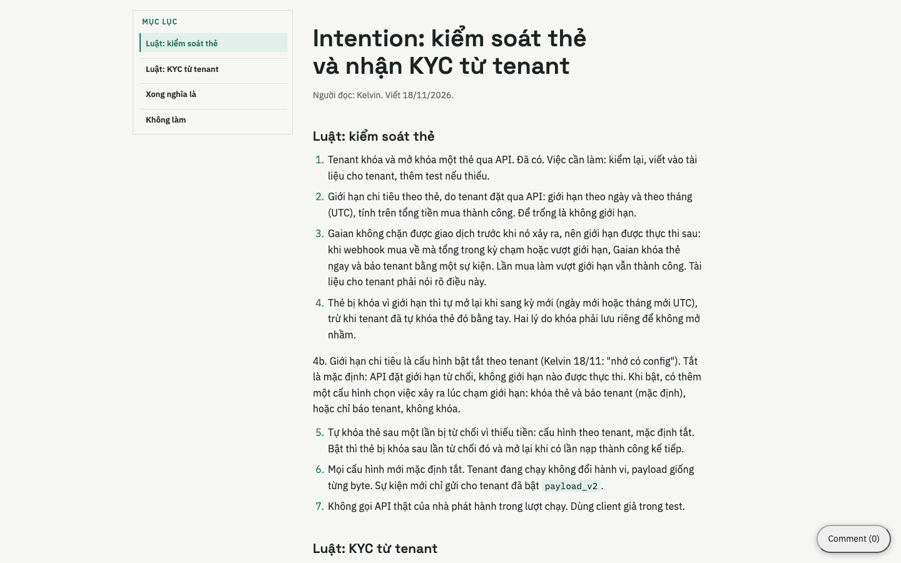

H4TF: PM Academy 2026, Track Tech, Buổi 1
Bấm một nút trên app, chuyện gì xảy ra?
Sản phẩm số được làm ra thế nào, PM làm việc với dev ra sao. Kelvin Truong, 30/11/2026
Chào các bạn
Mình là Kelvin
Mình không phải dev, nhưng gần như ngày nào cũng làm việc với dev và AI viết code.
- Founder, COO & CPO tại Gaian, startup làm hạ tầng thanh toán stablecoin ở châu Á.
- Trước đây là PM tại Hex Trust và Product Owner tại Starpunk.
- Member của Superteam Vietnam.
Bắt đầu từ một cú bấm
Bạn đặt đồ ăn trên app, vài giây sau đã có tài xế nhận đơn.
Trong mấy giây đó, app đã phải làm những gì?
Session 1: Bên trong một sản phẩm số
Mở một app ra, bên trong có những gì?
| Phần | Làm gì | Ví dụ ở quán cà phê |
|---|---|---|
| Frontend | Màn hình khách nhìn và thao tác | Menu cầm trên tay |
| API | Quy ước để các phần trao đổi với nhau | Phiếu order theo mẫu |
| Backend | Xử lý theo quy tắc của quán | Bếp và quầy thu ngân |
| Database | Lưu thông tin để tra lại | Sổ ghi đơn |
Session 1: Bên trong một sản phẩm số
Bạn bấm "Gọi món". App làm gì tiếp theo?
- Bạn chạm vào nút "Gọi món" trên điện thoại.
- App gửi thông tin đơn theo mẫu API.
- Backend kiểm tra món còn hay hết, rồi tính tiền.
- Database lưu đơn và ghi trạng thái "Chưa trả tiền".
- App nhận mã đơn và hiện mã QR để bạn thanh toán.
Session 1: Bên trong một sản phẩm số
Những phần đó chạy ở đâu?
Client
Điện thoại hoặc trình duyệt của bạn. Frontend chạy ở đây.
Server
Máy tính chạy liên tục để nhận yêu cầu. Backend và database nằm ở đây.
Cloud
Mình thuê server của Amazon hay Google và trả tiền theo mức sử dụng.
Cứ hình dung như thuê bếp theo giờ, thay vì tự xây một căn bếp riêng.
Quay lại câu hỏi ban đầu
Khi bạn bấm "Đặt đơn" trên app giao đồ ăn
| Phần | Thường làm những gì |
|---|---|
| Frontend | Hiện giỏ hàng, phí giao hàng và nút Đặt đơn |
| Backend | Tính phí giao, báo quán và tìm tài xế gần đó |
| Database | Lưu đơn hàng, địa chỉ và lịch sử đặt món |
| Đi thuê | Dùng bản đồ, cổng thanh toán và dịch vụ báo tài xế |
Vẽ sơ đồ
Sơ đồ cho app gọi món tại bàn
Chốt bốn điều: ai dùng, dùng màn nào, lưu dữ liệu gì và kết nối dịch vụ ngoài nào. Nét đứt là phần đi thuê.
Tới lượt bạn: 7 phút
Khách bấm "Trả tiền". Lệnh này đi qua đâu?
- Ai bấm nút, và bấm trên màn hình nào?
- Yêu cầu được gửi tới đâu trước tiên?
- Hệ thống cần kết nối với bên nào bên ngoài?
- Cần lưu lại thông tin gì và đổi trạng thái nào?
- Ai cần biết khách đã trả tiền: khách, bếp hay cả hai?
Tiền
Cứ đụng tới tiền là phải hỏi kỹ
- Khách đã thực sự trả tiền chưa?
- Nếu hoàn tiền thì làm thế nào, bao lâu mới nhận được?
- Cổng thanh toán báo kết quả chậm thì xử lý ra sao?
- Khách bấm hai lần, có bị trừ tiền hai lần không?
Người mới thường chưa nghĩ tới chuyện báo kết quả chậm. Người làm thanh toán lâu năm sẽ hỏi câu đó ngay từ đầu.
Một tình huống ở quán
Chủ quán muốn nút "Hủy món". PM nói 2 ngày, dev bảo 3 tuần.
Theo các bạn, ai đang tính đúng?
Nhắc lại từ Foundation
Khách muốn nút Hủy, nhưng họ đang cần điều gì?
Bấm nhầm
Chọn sai món, có thể chỉ cần hỏi lại khách trước khi gửi đơn.
Chờ lâu
Món ra chậm nên khách muốn bỏ. Thêm nút Hủy có thể làm bếp rối hơn.
Đổi ý
Trường hợp này thì khách thực sự cần một cách để hủy món.
Quay lại câu hỏi
Vậy ai đúng?
| Phần | A: Nhân viên hủy, trả tiền mặt | B: Khách tự hủy, app hoàn tiền |
|---|---|---|
| Frontend | Thêm nút Hủy trên màn hình bếp | Thêm nút Hủy và màn xác nhận trên app khách |
| Backend | Báo bếp bỏ món | Báo bếp, tính tiền hoàn và tạo yêu cầu hoàn tiền |
| Database | Ghi lại ai hủy và hủy lúc nào | Lưu thêm giao dịch hoàn tiền |
| Đi thuê | Không cần kết nối dịch vụ ngoài | Gửi yêu cầu hoàn tiền qua cổng thanh toán |
| Khoảng 2 ngày | Khoảng 3 tuần |
Cả hai đều có lý. Họ chỉ đang hình dung hai cách hủy món khác nhau.
Nghỉ 5 phút
Lát nữa mình quay lại nói chuyện làm việc với dev.
Session 2
Làm việc cùng dev
Từ lúc có ý tưởng đến khi tính năng tới tay người dùng.
Vòng đời một tính năng (SDLC)
Một tính năng sẽ đi qua những ai?
| Bước | Ai làm chính | PM cần làm gì |
|---|---|---|
| 1. Yêu cầu | PM | Nói rõ vấn đề và điều kiện để xem là xong |
| 2. Thiết kế | Designer, dev | Góp ý và hỏi những chỗ khó |
| 3. Build | Dev | Trả lời kịp thời, hạn chế đổi yêu cầu giữa chừng |
| 4. Test | QC | Để QC kiểm tra theo spec đã thống nhất |
| 5. Ra mắt | Dev, PM | Chọn nhóm dùng trước và chuẩn bị cách quay lại |
| 6. Đo, học | PM | Xem kết quả rồi quyết định vòng sau làm gì |
Bắt được lỗi từ bước 1 thường chỉ cần sửa spec, để tới bước 5 có thể mất cả tiền lẫn khách.
Chuyện ở Gaian
Mình không đọc code, làm sao biết code có đúng không?
- Nói rõ thế nào là xong trước khi bắt đầu làm.
- Yêu cầu viết test cùng lúc với code.
- Chạy thử trên bản sao dữ liệu rồi mới dùng với khách thật.

Làm việc với dev
Làm sao để dev cùng nghĩ, thay vì chỉ nhận việc?
Kể rõ vấn đề
Khi hiểu mục tiêu, dev có thể nghĩ ra cách giải quyết tốt hơn.
Cho xem bản nháp
Hỏi ý kiến khi mọi thứ còn đang phác thảo, đừng đợi tới buổi planning.
Hỏi chỗ khó
Có phần nào khó không? Có cách nào đơn giản hơn mà vẫn giải quyết được không?
Thêm gì, bớt gì
Muốn thêm việc giữa chừng thì cùng chốt việc nào sẽ chuyển sang sau.
Thử nhờ AI
AI viết spec trong 30 giây. Các bạn thấy dùng được chưa?
Spec 1 trang
Trong một tờ spec, mình cần ghi những gì?
| Phần | Cần trả lời câu hỏi nào? |
|---|---|
| 1. Vấn đề, phạm vi | Mình đang giải quyết chuyện gì, và không làm gì? |
| 2. User story | Ai muốn làm gì, để đạt được điều gì? |
| 3. Acceptance criteria | Đến mức nào thì được tính là xong? |
| 4. Edge case | Nếu có tình huống bất thường thì sao? |
| 5. Dữ liệu cần lưu | Sau này mình cần tra lại những gì? |
| 6. Tracking event | Làm sao biết người dùng có sử dụng? |
Acceptance criteria
Viết thế nào để ai đọc cũng biết đạt hay chưa?
Kiểu mơ hồ
"Khách gọi món thành công." Dev, QC và AI có thể hiểu mỗi người một kiểu.
Kiểu chấm được
Có 2 ly trong giỏ, khách bấm Gọi món. Trong 5 giây bếp thấy đơn và số bàn, khách nhận mã đơn.
Mẫu câu: Khi [tình huống], và [bạn làm gì], thì [kết quả nhìn thấy được].
Edge case
Nếu có chuyện ngoài dự tính thì sao?
- Đang thao tác thì mất mạng?
- Khách lỡ tay bấm hai lần?
- Giỏ hàng trống, hoặc món vừa hết?
- Trưa thứ Bảy, 30 bàn cùng gọi món?
- Cổng thanh toán phản hồi chậm?
- Bàn bên cạnh lại hủy món của bàn mình?
Không cần giải quyết hết ngay, nhưng phải rõ việc nào làm trước và việc nào để sau.
Dữ liệu và tracking event
App ra mắt rồi, mình cần theo dõi những gì?
Lưu lại để còn tra
Mã đơn, số bàn: để bếp mang món đúng bàn.
Món, giá: để cuối ngày đối chiếu tiền.
Trạng thái, giờ đổi: để biết món bị chậm ở khâu nào.
Mã giao dịch: để tra khi khách báo bị trừ tiền hai lần.
Đếm để hiểu khách
xem_menu: có bao nhiêu bàn quét QR?
them_vao_gio: món nào được chọn nhiều?
bam_goi_mon: có bao nhiêu người bỏ giỏ?
tra_tien_xong: có bao nhiêu đơn thanh toán xong?
Spec mẫu
Gọi món và trả tiền ngay tại bàn
Tự kiểm tra
Trước khi gửi spec, thử tự hỏi những câu này
- Vấn đề có bằng chứng, hay mới chỉ là mình đoán?
- Mình đã nói rõ lần này không làm gì chưa?
- Từng câu acceptance criteria đã chấm được đạt hay chưa?
- Đã nghĩ tới mất mạng, bấm hai lần và chuyện tiền chưa?
- Nếu khách khiếu nại, mình có đủ dữ liệu để tra không?
- Mỗi event có giúp trả lời một câu hỏi cụ thể không?
Làm theo nhóm
Tới lượt các bạn: 17 phút
| Phút | Nhóm làm gì |
|---|---|
| 4 | Viết user story và 3 acceptance criteria theo mẫu Khi, và, thì. |
| 4 | Tìm 4 edge case, chọn 1 cái cần xử lý ngay. |
| 3 | Ghi dữ liệu cần lưu và 3 event. |
| 6 | Nhờ AI viết spec, chấm theo 6 câu rồi sửa chỗ thiếu. |
Cùng xem bài
Cùng xem hai nhóm đã làm gì
- QC sẽ kiểm tra acceptance criteria số 2 như thế nào?
- Mất mạng lúc trả tiền thì khách nhìn thấy gì?
- Phần nhóm thêm vào ảnh hưởng tới những chỗ nào?
- AI hiểu sai ở đâu, prompt của nhóm còn thiếu gì?
Trước thứ Sáu, 4/12
Mang spec của nhóm tới buổi sau
- Hoàn thiện spec 1 trang, gửi BTC đúng hạn.
- Đăng nhập Google AI Studio bằng tài khoản Google, thử một câu bất kỳ.
- Buổi sau mình sẽ build ngay trên lớp, có thể dùng spec của nhóm bạn.
Nếu chỉ nhớ 3 điều
Những điều nên mang theo sau buổi học
Một cú bấm qua nhiều phần
Hiểu nó đi qua những đâu thì sẽ hiểu vì sao dev cần 3 tuần.
Dev cùng làm với mình
Nói rõ vấn đề trước, rồi cùng hỏi xem chỗ nào khó.
Spec là đề kiểm tra
Viết sao để ai đọc cũng chấm được đạt hay chưa, kể cả AI.
Hỏi đáp
Các bạn cứ hỏi điều mình đang thắc mắc
kelvin.truong@gaian.network, linkedin.com/in/khatruong93